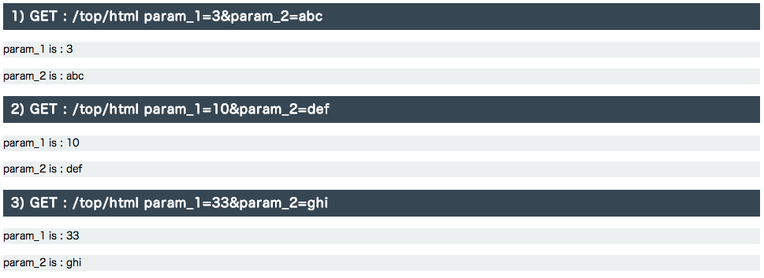
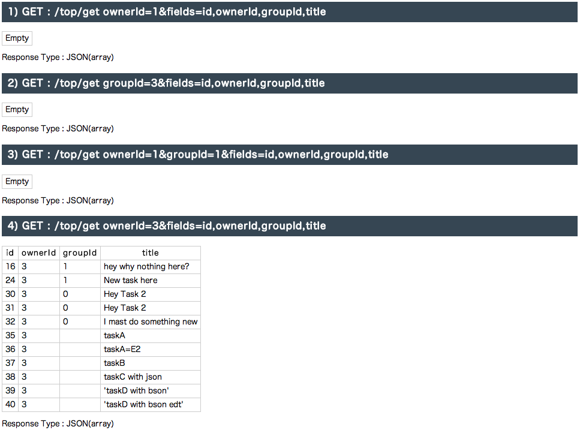

Tutorial
- PHP 5.4 (with APC, GD2, Memcache(Memcached), PDO, pdo-mysql ...)
- Memcached
- Smarty (optional)
- Check out from here
> cd YOUR_HTTP_DOCUMENT_ROOT > git clone https://github.com/soyoes/liberphp2 liberphp2
- Create project
> cd YOUR_HTTP_DOCUMENT_ROOT/liberphp2 > ./liberphp.php create myproj > cd ../myproj - Configurations
> vi conf/conf.incChange the following linesstatic $db_engine = "mysql"; #<- change to your own static $db_host = "127.0.0.1"; static $db_port = "3306"; static $db_name = "tasks"; #<- change to your own static $db_user = "root"; #<- change to your own static $db_pass = "root"; #<- change to your own static $cache_hosts = "localhost"; static $cache_port = "11211"; #<- change to your own - DB migration (Option)
> php liber.php migrate #run this under your project folder - Update you Apache configuration
Add these rows to your httpd.conf (or extra/httpd-vhosts.conf)<VirtualHost *:80> DocumentRoot "YOUR_PROJECT_PATH" Options FollowSymLinks ServerName YOUR_PROJECT_NAME.dev RewriteEngine on RewriteRule images/(.*)$ /webroot/images/$1 [L] RewriteRule css/(.*)$ /webroot/css/$1 [L] RewriteRule js/(.*)$ /webroot/js/$1 [L] RewriteRule ^(.*)\.html$ /webroot/html/$1.htm [L] RewriteRule !\.(php|svg|ttf|htc|ico|gif|png|jpg|jpeg|css|js|swf|html|htm|json)$ /liber.php?__URL__=%{REQUEST_URI} [QSA,NE,L]
</VirtualHost> - Add virtural host IP to your hosts file
# /etc/hosts 127.0.0.1 YOUR_PROJECT_NAME.dev - Restart your apache
- Try it by accessing http://YOUR_PROJECT_NAME.dev
| URI Pattern |
HTTP Method |
Delegate File |
Delegate Function |
|---|---|---|---|
| [/PATH]/CONTROLLER_NAME[/ID] |
GET POST PUT DELETE |
controllers/CONTROLLER_NAME.inc |
get($params) //@see example_1 post($params) //@see example_2 put($params) delete($params) |
| [/PATH]/CONTROLLER_NAME[/ID]/ACTION_NAME[/ID] |
GET POST PUT DELETE |
controllers/CONTROLLER_NAME.inc | ACTION_NAME($params) //@see example_3 |
| /@SCHEMA_NAME[/ID] |
GET POST PUT DELETE |
restful/SCHEMA_NAME.inc
(Optional, you can do auth check or filtering here) |
get($params) //Optional, @see example_4 post($params) //Optional, @see example_5 put($params) //Optional, @see example_6 delete($params) //Optional |
Restful Request Query Commands
| Command (browser) | Alias (db_find) | Syntax | Example | Description |
|---|---|---|---|---|
| eq | = | ${column_name}=${v} |
browser :/@tasks?id=5 db_find :db_find("tasks", [id=>5]); | equal
select * from tasks where id=5;
|
| ne | ! |
browser :${column_name}@ne=${v} db_find :[ "${column_name}@!" => ${v} ] |
browser :/@tasks?id@ne=5 db_find :db_find("tasks", ["id@!"=>5]); | not equal
select * from tasks where id != 5;
|
| lt | $lt; |
browser: ${column_name}@lt=${v} db_find: [ "${column_name}@<" => ${v} ] |
browser :/@tasks?id@lt=5 db_find :db_find("tasks", ["id@<"=>5]); | less than
select * from tasks where id < 5;
|
| gt | $gt; |
browser: ${column_name}@gt=${v} db_find: [ "${column_name}@>" => ${v} ] |
browser :/@tasks?id@gt=5 db_find :db_find("tasks", ["id@>"=>5]); | greate than
select * from tasks where id > 5;
|
| le | $le; |
browser: ${column_name}@le=${v} db_find: [ "${column_name}@≤" => ${v} ] |
browser :/@tasks?id@le=5 db_find :db_find("tasks", ["id@≤"=>5]); | less than or equal
select * from tasks where id ≤ 5;
|
| ge | $ge; |
browser: ${column_name}@ge=${v} db_find: [ "${column_name}@≥" => ${v} ] |
browser :/@tasks?id@ge=5 db_find :db_find("tasks", ["id@≥"=>5]); | greate than or equal
select * from tasks where id ≥ 5;
|
| in | [] |
browser: ${column_name}@in=${v1,v2 ...} db_find: [ "${column_name}@[]" => ${v1,v2 ...} ] |
browser :/@tasks?id@in=5,6 db_find :db_find("tasks", ["id@[]"=>[5,6]]); | sql in clause
select * from tasks where id in (5,6);
|
| nin | ![] |
browser: ${column_name}@nin=${v1,v2 ...} db_find: [ "${column_name}@![]" => ${v1,v2 ...} ] |
browser :/@tasks?id@nin=5,6 db_find :db_find("tasks", ["id@![]"=>[5,6]]); | sql not in clause
select * from tasks where id not in (5,6);
|
| bt | () |
browser: ${column_name}@bt=${v1,v2} db_find: [ "${column_name}@!()" => ${v1,v2} ] |
browser :/@tasks?id@bt=5,20 db_find :db_find("tasks", ["id@!()"=>[5,20]]); | sql between
select * from tasks where id between (5,20);
|
| nb | !() |
browser: ${column_name}@nb=${v1,v2} db_find: [ "${column_name}@!()" => ${v1,v2} ] |
browser :/@tasks?id@nb=5,20 db_find :db_find("tasks", ["id@!()"=>[5,20]]); | sql not between
select * from tasks where id not between (5,20);
|
| l | ? |
browser: ${column_name}@l=${v} db_find: [ "${column_name}@?" => ${v} ] |
browser :/@tasks?title@l=abc db_find :db_find("tasks", ["title@?"=>"abc"]); | sql like
select * from tasks where title like '%abc%';
|
| nl | !? |
browser: ${column_name}@nl=${v} db_find: [ "${column_name}@!?" => ${v} ] |
browser :/@tasks?title@nl=abc db_find :db_find("tasks", ["title@!?"=>"abc"]); | sql not like
select * from tasks where title not like '%abc%';
|
| m(TODO) | ~ |
browser: ${column_name}@m=${v} db_find: [ "${column_name}@~" => ${v} ] | db_find :db_find("tasks", ["title@~"=>"abc|bcd"]); | sql regex match
mysql/postgres only For MySQL : these are available : ^ , $ , . , [...] , [^...] , p1|p2|p3 , * , + , {n} , {m,n} MySQL example select * from tasks where title regexp 'abc|bcd';
|
| nm(TODO) | !~ | db_find: [ "${column_name}@<" => ${v} ] | db_find :db_find("tasks", ["id@<"=>5]); | sql regex not match mysql/postgres only |
| mi(TODO) | ~~ | db_find: [ "${column_name}@<" => ${v} ] | db_find :db_find("tasks", ["id@<"=>5]); | sql regex match(ignore case) mysql/postgres only |
| nmi(TODO) | !~~ | db_find: [ "${column_name}@<" => ${v} ] | db_find :db_find("tasks", ["id@<"=>5]); | sql regex not match(ignore case) mysql/postgres only |
Customize Your Restful Request Permissions
Use schema file
@see : [general][restful] of chapter DB, Model, Schema
Use delegate
Example_1 : Call controller with default action using GET method
Given that the URI = /mycontroller?id=1&name=sss
Your controller file (path = controllers/mycontroller.inc)
<?php
function get($params){
//all request parameters are encapsulated in $params
render_json($params);
//also you can use render_html(with smarty)
//or render_text to send plain text
}
?>
The result will be :
{"id":1,"name":"sss"}
Example_2 : Call controller with default action using POST method
#in your html with jquery
<script>
$.post('/mycontroller',{id:1,title:"blah blah..."});
</script>
#in your controllers/mycontroller.inc
<?php
...
function post($params){
//all request parameters are encapsulated in $params
render_json($params); //params = {id:1,title:"blah blah..."}
}
Example_3 : Call controller with action name
# call mycontroller/myaction?name=php
# in your controllers/mycontroller.inc
<?php
...
function myaction($params){
render_text($params["name"]);
}
#the result will be "php"
Example_4 : Use automatical RESTful mechanism to GET data
#Get newest 20 tasks from tasks table
> curl http://myproj.dev/@tasks?order=desc&sort=updAt&limit=20
#Get tasks that title like '%test%' and register after 2013-10-30
> curl http://myproj.dev/@tasks?title@l=test®At@gt=2013-10-30
#Get task with id=35
> curl http://myproj.dev/@tasks/35
#you don't need to write server code, liberPHP does this for you.
Example_5 : Use automatical RESTful mechanism to POST new record
#in your html with jquery
<script>
$.post('/@tasks',{title:"blah blah..."});
</script>
#the result will be
{id:75, title:"blah blah... "} //75 is the last insert id
#you don't need to write server code, liberPHP does this for you.
Example_6 : Use automatical RESTful mechanism to Update record
#in your html with jquery
<script>
$.put('/@tasks/75',{title:"blah new"}); //you must use PUT method here
</script>
#the result will be
{id:75, title:"blah new"}
#you don't need to write server code, liberPHP does this for you.
Example_7 : Use automatical RESTful mechanism with filter
if you want to do permision check upon auto RESTful request
you may just simply add delegate methods under /restful/YOUR_SCHEMA.inc
#in your html with jquery
<script>
$.put('/@tasks/75',{title:"blah new"}); //you must use PUT method here
</script>
#in your restful/tasks.inc
<?php
/**
* Delegate method,
* the name must obey the rules of rest_{SCHEMA_NAME}_{METHOD_NAME}
* @param $table: tablename
* @param $params: http request params
*/
function rest_tasks_post($table, $params){
if(!isset($_SESSION["userId"])) //e.g. for login user only
return false;
return true;
}
#if the is not loged in then the result will be
{code:401, message:"RESTful ERROR : Sorry, You are not permited to do that."}
Schema (DB table definations)
You must tell liberPHP about your db schemas before you use db functions.
the schema files are under PROJ_HOME/conf/schemas/*.ini
Here is a very simple example. of file PROJ_HOME/conf/schemas/tasks.ini
[general]
name = tasks //table name = tasks
pk = id //primary key = id
restful = "get,post" //permit http get/post restful request.
//all : permit all
//none : disable auto restful
[schema]
id = "BIGINT NOT NULL AUTO_INCREMENT"
ownerId = "BIGINT NOT NULL"
title = "varchar(256)"
[index]
ownerId = "normal" //create index on ownerId
DB Migration
After defined schema files. You can create tables using migrate method via command line.
NOTICE: for this moment. you have to create database and db user manually.
> php liber.php migrate
DB Query
/*
* if useCache == true
* we will get result from Cache first.with $sql as key
* if there is no data in cache. the result from db will be add to cache
* @see Use Cache for more information
*/
$res = db_query($sql,$useCache=false); //$res is assoc-array
DB Query With Condition
/*
* syntax : db_find(tablename, conditions);
* @see DB.inc for more information about conditions.
*/
$res = db_find("tasks", [
"@fields" => "id",
"regAt@>" => "2013-10-30",
"title@?" => "Milk",
]);
//=select id from tasks where regAt>'2013-10-30' and title like '%Milk%'
DB Query With Model
$m = Model::factory("tasks");
$res = $m->find(["regAt@>"=>'2013-10-30']);
DB Insert & Update
db_save('tasks',[title=>'My New Task'],true);
//=insert into tasks (title,regAt) values('My New Task',$now);
//returns [title='My New Task',id:5,regAt:$now]
db_save('tasks',[id=>3, title=>'New title']);
//=update tasks set title='New title' where id=3
DB Insert/Update With Model
$m = Model::factory("tasks");
$m->fetch(3); //fetch data where id=3
$m->set("title","New Title With Model");
$m->save();
//=update tasks set title='New title With Model' where id=3
DB Insert Multiple Rows
db_import("tasks",[
[title=>"task1"],
[title=>"task2",priority=>1],
[title=>"task3"]
]);
//=Insert into tasks (title,priority,regAt)
// values ("tasks1",0,$now),("tasks2",1,$now),("tasks3",0,$now)
DB Transaction
$res = db_trans([
"insert into tasks (title) values ('my title')",
"select LAST_INSERT_ID() as 'last_id'"
]);
$id = $res[0]["last_id"];
//insert into db and get the last inserted id;
//if there are errors, db->rollback will be called automatically
- We use both APC & Memcached as our cache system
//get from cache /** @param $callback: a function returns value of $key, it is used when $key not exists in APC or Memcache @param $use_memcache: true means get from APC first then Memcache. false=APC only */ cache_get($key, $callback, $use_memcache=true){} cache_set($key, $value, $use_memcache=true){} /** @see Cache.inc for more informations*/
- LiberPHP2 provides a lightway & very fast HTML render.
There are only less than 10 kinds of keywords/syntax,
if you have the expierence of Smarty or other html templates, it will be very easy to understand.Template File Path
The HTML render compiles your template files to equivalent php file and cache them under PROJECT_HOME/tmp
The template file pathPROJECT_HOME/views/{$CLIENT_TYPE}/{$CONTROLLER_NAME}_{$ACTION_NAME}.html /* CLIENT_TYPE : depends where the request comes from. type could be one of the following types. * pc : request from a PC browser * sm : request from smartphone, such as iPhone, iPod touch, Android * pad : request from iPad or some brands of Android such like Galaxy... * bot : a bot(spider) from google, Yahoo ... */The Layout File
You can specify a layout file for certain kinds of template
the file should be found as /views/{$CLIENT_TYPE}/_layout.html
the content of layout file should have a preserved keyword called __CONTENTS__
without __CONTENTS__ the contents fetched from the template file won't be rendered.
Here is the example of a layout file<html> <head> <title>LiberPHP2</title> <meta http-equiv="X-UA-Compatible" content="IE=edge"> <meta http-equiv="Content-Type" content="text/html; charset=utf-8"> <meta name="description" content=""> <link rel="stylesheet" href="/css/my_css.css" type="text/css" /> <script src="/js/my_js.js"></script> </head> <body> __CONTENTS__ </body> </html>Compiled php file path
PROJECT_HOME/views/{$CLIENT_TYPE}/template-{$CONTROLLER_NAME}_{$ACTION_NAME}.phpKeywords & Syntax
Keywords/Syntax Example Equivalent PHP code Description {$VAR_NAME} {$myVar}echo $myVar;echo a php variable {% KEY_NAME} {% myfile.mykey}T("myfile.mykey");echo localized string {var} {var $myvar=1}$myvar=1;declare a local php variable {if}, {elseif}, {else} {if $myvar>100} larger than 100 {elseif $myvar<1} less than 1 {else} othersif($myvar>100) echo "larger than 100"; elseif($myvar<1) echo "less than 1"; else echo "others";if else ... clause {for}, {break} /* given that $arr=[ [title=>"title1"], [title=>"title2"] ... ] */ {for $arr,$item} {$item.title} {/for}foreach($arr as $item) echo $item["title"];foreach, for ... break clause {ignore} <script> {ignore} var myJSVar = {id:"myId"}; {/ignore} <script>$code = <<<EOF <script> var myJSVar = {id:"myId"}; <script> EOF; echo $code;ignore keywords {include} {include 'myfile.html'}include other templates {comment}(TODO) TODO not available yet To Assign Values & render
//in your controller file : /controllers/mycontroller.inc function myaction($params){ assign('myvar_1', "val_1"); render_html(null, [my_var2 => "val_2"]); //null means use default template name : mycontroller_myaction.html } //in your template file : /views/pc/mycontroller_myaction.html <div>{$myvar_1}</div> <div>{$myvar_2}</div> //the result will be something like <div>val_1</div> <div>val_2</div>
- LiberPHP2 provides a very simple way to support multi-languages.
//in your conf/conf.inc Consts::$lang = "en"; //in your text file : /conf/text/en/file1.ini key1 = foo key3 = bar //in your text file : /conf/text/en/mycontroller.ini key2 = hello //in your controller file : /controllers/mycontroller.inc function myaction($params){ assign('myvar_1', T("file1.key1")); assign('myvar_2', T("key2")); //if no file name, render will try to use /conf/text/en/mycontroller.ini render_html(); } //in your template file : /views/pc/mycontroller_myaction.html {$myvar_2}, {$myvar_1} {% file1.key3} //the result will be hello, foo bar
- Under standing Filters
If you have the exp of playing with J2EE servlet. You could be familiar with the following process. -> 1st filter->start() -> 2nd filter->start() -> nth filter->start() -> CONTROLLER.inc :: ACTION($params) -> nth filter->end() -> 2nd filter->end() -> 1st filter->end() We Use Filters to check Auth - AuthFilter Example
Configuration
//in your conf/conf.inc static $filters = ['auth'=>'*'];Add a authfilter class
//file : /filters/auth.inc <?php class AuthFilter extends Filter{ /** @param $params : parameters of your http request. @param $authRequired: depends on your controller file->$auth_action */ public function before($params, $authRequired){ if($authRequired && !($_SESSION['user_id'])){ return false; } return true; } }
- Create test case file under /test with a name of ${YOUR_CONTROLLER}_${YOUR_ACTION}.csv
- Add test case to /test/${YOUR_CONTROLLER}_${YOUR_ACTION}.csv
Example of CSV:
[method] param_1 param_2 get 1 abc post 2 def * use column name "[method]" to specify your HTTP method
Run the test cases
From your browser , visit http://${YOUR_HOSTNAME}/${YOUR_CONTROLLER}/test_${YOUR_ACTION} with no params
Example of test result (HTML)
Example of test result (JSON) : json data will be print out as

Performance Test Test tool : ApacheBench
> ab -c 100 -n 10000 URLPattern Example URL Average Response Time Description Direct access to php file /test.php 8ms test.php is under DocumentRoot
No sessionphp file with apache rewrite /test.php 13ms test.php is under DocumentRoot/mypath
No sessionphp file under liberPHP2 /test.php 14ms test.php is under DocumentRoot/liberProj/
No sessionliberPHP2 /top/test 27-30ms Including (1ms-4ms All-in-one)
Dispatching (3ms-5ms)
Load & exec Filters(1ms - 3ms)
Session start (2-5ms, memcached base)
Use echo to write HTML code.liberPHP2 with embeded HTML Render /top/test 32-41ms Use Embeded Template engine to render HTML liberPHP2 with Smarty /top/test 71ms Use Smarty to render HTML FuelPHP no HTML Render Helloword 434ms
(As the same level with LiberPHP1.x, archived now)CakePHP with Smarty /top/test Timeout
10371ms (c=100,n=100)Use Smarty to render HTML
With default performance options,
Using .htaccess(default)
And there is no error on the page.Symphony2 with Swig standalone toppage Sorry no response at all
7377ms (c=10,n=10)What's Next?